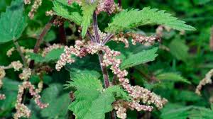

Urticaceae
Nettle Family
The Urticaceae family, commonly known as the nettle family, is a large and diverse group comprising mostly herbaceous plants, but also including some shrubs, small trees, and lianas. Many members are famous (or infamous) for their stinging hairs (trichomes). Leaves are typically simple and stipulate. Flowers are small, usually unisexual, greenish, and often wind-pollinated, borne in various types of clusters. The fruit is typically an achene. The family has a cosmopolitan distribution but is most diverse in tropical regions.
Overview
Urticaceae is a widespread family of about 2600 species in 50-60 genera, found throughout the world but concentrated in the tropics and subtropics. While best known for the stinging nettles (Urtica), the family includes many non-stinging members, some of which are popular houseplants (e.g., Pilea) or economically important fiber plants (e.g., Ramie, Boehmeria nivea).
Plants in this family often thrive in moist, shaded, nutrient-rich environments. The stinging hairs found in many genera serve as a defense mechanism against herbivores. Flowers are typically small and reduced, consistent with wind pollination, although some species may be insect-pollinated. The family exhibits considerable variation in habit, from small annual herbs to large tropical trees.
Economically, the family provides fibers (Ramie is one of the oldest fiber crops), edible plants (nettle soup, cooked greens), traditional medicines, and ornamental species. Some species can be weedy. Phylogenetically, Urticaceae is part of the "urticalean rosids," closely related to Moraceae, Cannabaceae, and Ulmaceae.
Quick Facts
- Scientific Name: Urticaceae
- Common Name: Nettle family
- Number of Genera: Approximately 50-60
- Number of Species: Approximately 2,600
- Distribution: Cosmopolitan, especially diverse in tropical and subtropical regions
- Evolutionary Group: Eudicots - Rosids - Order Rosales
Key Characteristics
Growth Form and Habit
Predominantly annual or perennial herbs, but also includes shrubs, small trees, and lianas. Many species possess specialized stinging hairs (trichomes) on their stems and leaves, which inject irritant chemicals upon contact. However, many genera lack stinging hairs entirely. Stems are often fibrous.
Leaves
Leaves are usually simple (rarely palmately compound) and arranged oppositely or alternately, often varying within the same plant. Leaf margins are commonly toothed or serrated, sometimes entire. Stipules are typically present, though sometimes fused or falling early. Many species have cystoliths (concretions of calcium carbonate) in their epidermal cells, which may appear as dots or streaks, especially on dried specimens.
Inflorescence
Flowers are borne in various types of inflorescences, commonly axillary cymose clusters, which can be open and branched, or condensed into dense heads, spikes, or panicles. Inflorescences are often unisexual.
Flowers
Flowers are small, inconspicuous, typically unisexual (plants monoecious or dioecious), and usually greenish. Pollination is mostly by wind (anemophilous), sometimes by insects.
- Perianth: Consists of a single whorl of (usually) 4 or 5 sepals (sometimes 3 or fused), often persistent in fruit; petals are absent.
- Male Flowers (Staminate): Usually have 4 or 5 stamens, opposite the sepals. Filaments are typically inflexed in bud and spring outward elastically at maturity, explosively releasing pollen. A rudimentary pistil (pistillode) is often present.
- Female Flowers (Pistillate): Have a superior ovary, typically composed of a single carpel with one basal ovule. The style is usually single with a often brush-like (penicillate) or linear stigma. Staminodes may be present or absent.
Fruits and Seeds
The fruit is typically a small, dry, indehiscent achene, often enclosed or subtended by the persistent perianth. Less commonly, the fruit may be fleshy and drupe-like, or the perianth may become fleshy, aiding dispersal. The seed usually contains an oily endosperm and a straight embryo.
Chemical Characteristics
The most notable chemical feature is the presence of irritant compounds in the stinging hairs of many genera. These typically include formic acid, histamine, acetylcholine, and serotonin, which cause the characteristic stinging sensation and rash upon contact. Mucilage cells and tannins are also common in the family.
Field Identification
Identifying Urticaceae often involves looking for a combination of habitat, habit, leaf arrangement, and, where present, the characteristic stinging hairs.
Primary Identification Features
- Stinging Hairs: Presence of stinging hairs on stems and/or leaves (characteristic of many, but not all, genera like Urtica, Laportea).
- Habit: Mostly herbaceous (annual or perennial).
- Leaves: Simple, stipulate, often opposite or alternate with toothed margins.
- Flowers: Small, greenish, unisexual flowers clustered in axillary inflorescences.
- Habitat: Often found in moist, shaded, or disturbed areas with rich soil.
Secondary Identification Features
- Stipules: Presence, size, and shape can be useful.
- Cystoliths: Visible dots or streaks on dried leaves.
- Fibrous Stems: Stems often contain strong fibers.
- Pollen Release: Explosive pollen release from male flowers (requires close observation or magnification).
Seasonal Identification Tips
- Spring/Summer/Fall: Most species flower and fruit during the growing season. Vegetative characteristics (stinging hairs, leaf arrangement) are key identification features throughout this period.
- Winter: Most herbaceous species die back, though basal rosettes or rhizomes may persist. Dried stalks might remain for some species.
Common Confusion Points
Urticaceae members, especially non-stinging ones, can be confused with:
- Lamiaceae (Mint family): Often have opposite leaves and herbaceous habit, but typically possess square stems, aromatic foliage, and bilabiate (two-lipped) flowers. Lack stinging hairs.
- Verbenaceae (Vervain family): Can have opposite leaves and small flowers in spikes, but flower structure is different (tubular corolla, typically 4 stamens). Lack stinging hairs.
- Acanthaceae: Diverse family, some herbs with opposite leaves, but flowers are usually more conspicuous and bilabiate or tubular. Lack stinging hairs.
- Other herbaceous families: Careful examination of flower structure, fruit type, and presence/absence of stipules and stinging hairs is needed for differentiation.
Field Guide Quick Reference
Look For:
- Herbaceous habit (mostly)
- Stinging hairs (common, but not universal)
- Simple leaves (opposite or alternate)
- Stipules present
- Small, greenish, unisexual flowers in clusters
- Moist, rich habitats
Key Variations:
- Presence/Absence of stinging hairs
- Leaf arrangement (opposite vs. alternate)
- Inflorescence structure (open vs. dense)
- Plant habit (herb, shrub, tree)
Notable Examples
The Urticaceae family includes well-known stinging plants, popular houseplants, and fiber crops.

Urtica dioica
Stinging Nettle / Common Nettle
A widespread perennial herb known for its potent stinging hairs covering the stems and opposite leaves. Flowers are small, greenish, borne in drooping axillary clusters. Despite the sting, young shoots are edible when cooked and highly nutritious. It prefers moist, nutrient-rich soils.

Pilea peperomioides
Chinese Money Plant / UFO Plant
A popular houseplant native to southern China, known for its distinctive round, peltate leaves on long petioles arising from an erect stem. It lacks stinging hairs and produces small, greenish flowers. Easily propagated from offsets (pups) that arise from the base.

Boehmeria nivea
Ramie / China Grass
A perennial shrub native to eastern Asia, cultivated for centuries for its strong stem fibers, among the longest natural plant fibers. Leaves are large, heart-shaped, alternate, green above and densely white-hairy beneath (in var. nivea). Lacks stinging hairs. Used to produce textiles.

Laportea canadensis
Wood Nettle
A common perennial herb of moist woodlands in eastern North America. It has alternate, ovate, coarsely toothed leaves and possesses stinging hairs, though often less potent than Urtica dioica. Flowers are borne in large, open, branching axillary clusters (panicles).
Phylogeny and Classification
Urticaceae is firmly placed within the order Rosales, belonging to the Rosid clade of eudicots. It is a core member of the "urticalean rosids," a group characterized by often simple, stipulate leaves and frequently reduced, unisexual flowers.
Molecular phylogenetic studies confirm its close relationship with Moraceae (Mulberry family), Cannabaceae (Hemp/Hackberry family), and Ulmaceae (Elm family). These four families share a common ancestor and represent a significant diversification within the Rosales. Relationships within Urticaceae itself are complex, with ongoing research refining the classification of its numerous genera.
Position in Plant Phylogeny
- Kingdom: Plantae
- Clade: Angiosperms (Flowering plants)
- Clade: Eudicots
- Clade: Rosids
- Order: Rosales
- Family: Urticaceae
Evolutionary Significance
Urticaceae showcases significant evolutionary trends and adaptations:
- Evolution of Defense: The development of stinging hairs is a remarkable chemical and mechanical defense against herbivory, evolving independently in other plant families as well.
- Habit Diversity: The family spans a wide range of growth forms from tiny ephemeral herbs to substantial trees, demonstrating adaptability to diverse niches.
- Wind Pollination Syndrome: The reduction of floral parts and explosive pollen release are classic adaptations for wind pollination seen in many members.
- Fiber Production: The evolution of strong bast fibers in genera like Boehmeria has been economically significant for humans.
- Ecological Role: Many species are important components of nutrient-rich ecosystems and serve as host plants for various insects, including butterflies.